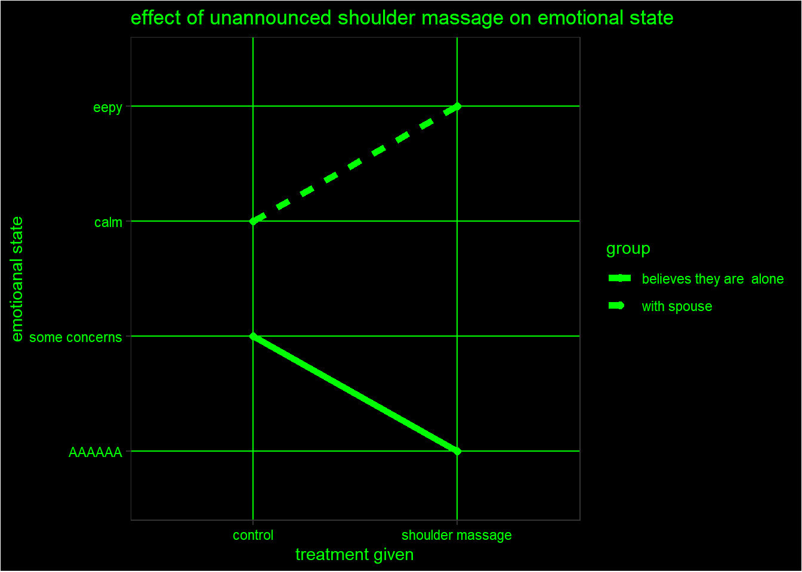

Students understand how interaction works in daily life
Students can read an interaction graph
Students know the slope method for detecting interacction
Students know the dot on dot method for detecting interaction (I made this up)
Students know how interaction can play a role in deceptive results
Concepts:
Interaction
Generalizability (again)
Intuition Tools:
Dot on dot: Same initial conditions
Lesson Material:
Students will be first introduced to a concept they are likely familiar with but maybe didnt know the scientific/statistical relevance of: Some things help in some contexts but hurt in others, and sometimes things are more than the sum of their parts.
We will return to the 2x2 table with two groups of two categorical (group:(environment a; environment b) and treatment:(on; off))
Now for the example, there is the example of caffeine and extroversion (need to find source), but something this one sounds more fun
library(ggplot2)group<-rep(c( 'with spouse','believes they are alone'),each=2)trt<-rep(c('control', 'shoulder massage'),times=2)#Y<-c(4,10,6,0)Y<-factor(c('calm','eepy','some concerns','AAAAAA'), levels=c('AAAAAA', 'STRESSED', 'stressed','uncomfortable', 'some concerns','mid', 'calm', 'at peace', 'relaxed', 'no concerns', 'eepy'),ordered=TRUE)df<-data.frame(group,trt,Y)cuscolor<-c('believes they are alone'='green','with spouse'='green')ggplot(df, aes(x=trt, y=Y, group=group, color=group))+geom_line(size=2, aes(linetype=group))+geom_point(size=2)+labs(title='effect of unannounced shoulder massage on emotional state',x='treatment given',y='emotioanal state') +theme_bw()+scale_linetype()+scale_color_manual(values=cuscolor)+theme(panel.background =element_rect(fill ="black"),plot.background =element_rect(fill ="black"),text =element_text(color ="green"),legend.text =element_text(color ="green"),legend.title =element_text(color ="green"),legend.key =element_rect(fill="black"),legend.background =element_rect(fill="black"),axis.text =element_text(color ="green"),axis.title =element_text(color ="green"),panel.grid =element_line(color ="green") )
Warning: Using `size` aesthetic for lines was deprecated in ggplot2 3.4.0.
ℹ Please use `linewidth` instead.

We will then go over the different types of interaction {widening, closening, crossing, flat and not flat} and non interaction {both up, both down, both flat} and starting conditions {on top, different} (I plan to make an image table with each instance, but I will have tho think of a way to organize it)
We will first cover that interaction is when the slope is not approx equivalent, and then we will go over the method where you line up the starter points, then see if they end up in the same location, which is a method i made up in the event that anyone had missed slope for some reason.
We will then talk about how context can make or break certain treatments, and how categorizing things as effective, noneffective,helpful, or harmful is potentially deceptive. Interaction and generalizability can go hand in hand
Assessment:
The first assessment is very simple, students will be given a list of pictures (no words or numbers) and be asked to determine if interaction is present
“a study where patients were locked in a fallout shelter for 30 days with dwindling food supply found that handing them a stick of dynamite significantly decreased their stress levels, your colleague reads this and suggests handing out sticks of dynamite as a way to decrease stress levels. Why is his idea flawed?” The study is not generalizable because there is likely an interaction effect between being handed dynamite and being in a dying fallout shelter.
Students will be asked to come up with a few examples of situations where an interaction effect is likely present.